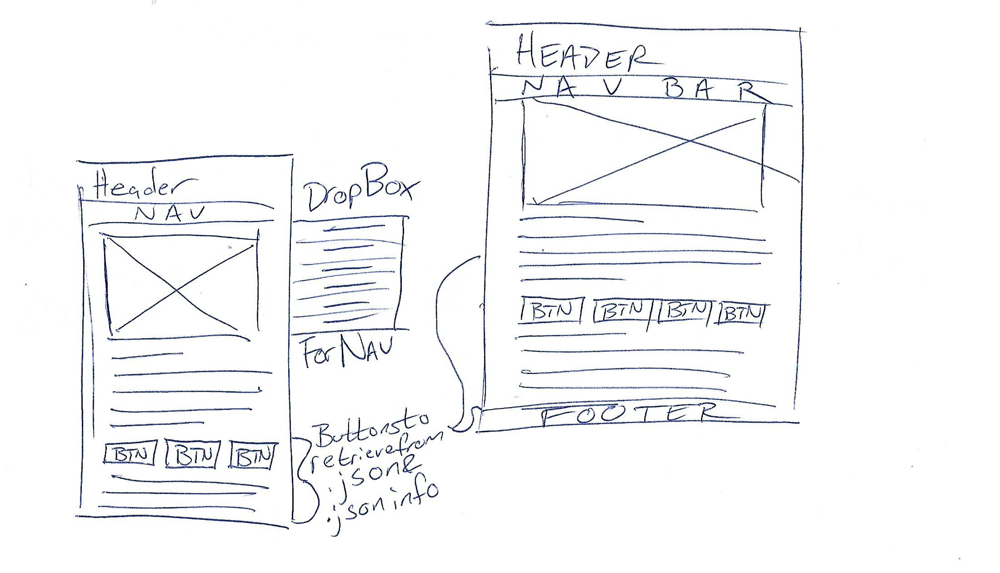
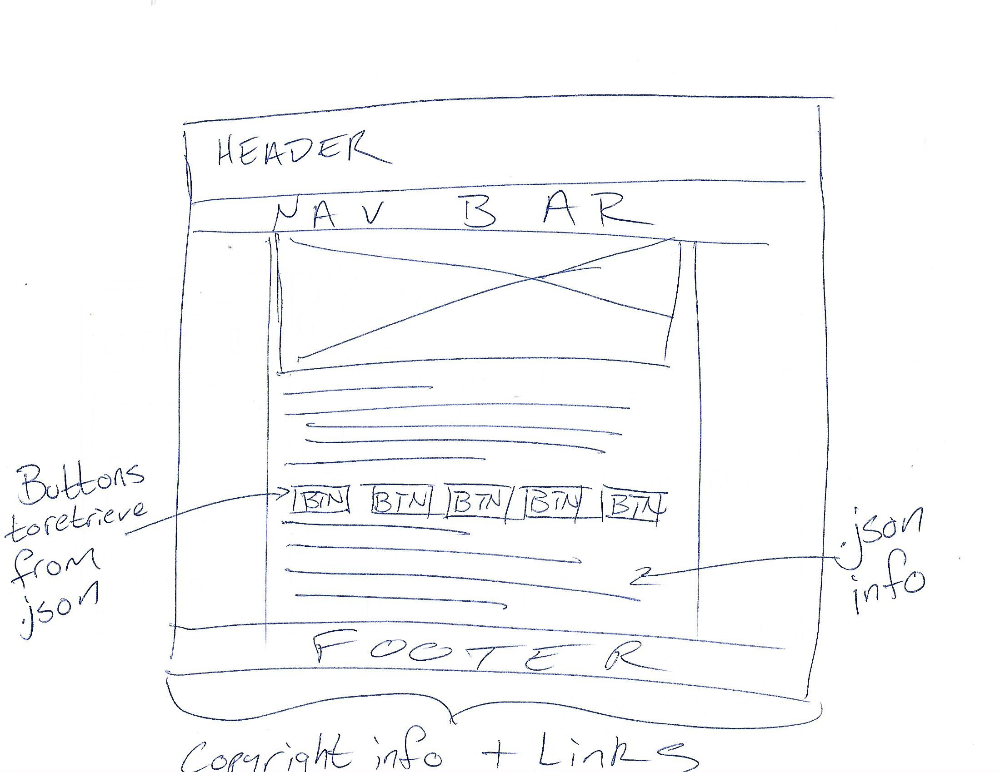

Char EnGen Site Plan
by Steven Chamberlain
Note: The following project plan has been ammended from its original to better suit the purposes of this site and the project guidelines.
Project Purpose
My project is a website for creating characters for the Dungeons & Dragons roleplaying game. It will feature information on classes, races, and other features as well as a JavaScript based character generator.
The Audience
The audience will be D&D players, particularly those who are new to the game or simply want to make a character quickly.
Profile
- Rebecca Sims
- Age: 21
- Gender: Female
- Demographics:
- College art student
- Single
- Works at local supermarket
- Goals:
- Get art degree
- Find a long-term relationship
- Get an internship in the illustration field
- Environment: • Comfortable computer user and experienced internet user. Uses school wi-fi and has wi-fi at home. Uses texting and social media extensively to communicate. Spends an average of 3-6 hours online each day.
Pages
Most every page, except the generator, will be headed by an image. A json file will be created containing information about each race, class, and background that will be displayed on the appropriate pages via a series of buttons.
Home – The home page will include a brief description about the site’s purpose and step-by-step instructions as to how to create a character via a video.
Races – Will outline general details about each playable race in the generator. A button for each race will retrieve and display information from a json file.
Classes – Will outline details about each playable class in the generator. Again, class information will be retrieved and displayed from a json file via buttons.
Backgrounds – Will be a basic guide to backgrounds and will assist in choosing one. This page will also retrieve info from a json file as the two preceding pages.
Generator – Will include the generator itself, a JavaScript file, implemented into the page.
Wireframe Sketches
Note: The medium sized wireframe was not implemented due the fact that the large layout worked for both mediums and looked best on tablets.
 